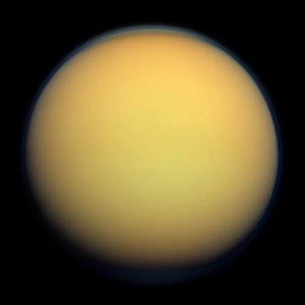

Titã - Lua de Saturno

Introdução e História
Titã é a maior lua de Saturno e a segunda maior do Sistema Solar, descoberta em 1655 pelo astrônomo Christiaan Huygens. Seu estudo ganhou grande destaque com a missão Cassini–Huygens, que orbitou Saturno entre 2004 e 2017, revelando uma lua com uma atmosfera espessa e uma superfície complexa com lagos de hidrocarbonetos. Titã é o único satélite do Sistema Solar conhecido por possuir uma atmosfera densa e um ciclo de líquidos na superfície semelhante ao ciclo da água na Terra — mas com metano e etano em vez de água líquida.
Características Físicas: Diâmetro, Massa e Órbita
Titã tem um diâmetro de aproximadamente 5.150 km, tornando-a maior que o planeta Mercúrio e quase do tamanho da maior lua do Sistema Solar, Ganimedes.
Orbita Saturno a uma distância média de cerca de 1,22 milhão de km, completando uma volta em cerca de 15,94 dias terrestres.
Sua densidade sugere uma mistura de rocha e gelo, com uma possível camada líquida interna abaixo da crosta sólida.
Estrutura Interna e Geologia
Titã possui uma crosta de gelo que encobre um interior complexo. Dados da Cassini–Huygens sugerem a presença de um oceano subterrâneo salgado abaixo da camada externa, embora aspectos da sua estrutura interna ainda sejam objeto de estudo.
A superfície mostra características terrenas surpreendentes: dunas, vales e regiões escavadas por líquidos, que se comportam de modo análogo ao ciclo hidrológico terrestre, mas com metano e etano como componentes principais.
Missões Espaciais
A missão Cassini–Huygens foi a mais importante para Titã. Em 2005, o módulo Huygens pousou na superfície, fornecendo dados diretos sobre sua atmosfera e solo.
Futuras missões, como a Dragonfly da NASA, planejada para explorar o terreno e depositar instrumentos em diferentes locais da superfície, visam aprofundar a compreensão da química orgânica e da habitabilidade de Titã.
Atmosfera e Exosfera
Titã tem uma atmosfera densa, composta principalmente de nitrogênio (≈95%), com metano e outros hidrocarbonetos. Esse denso “nevoeiro” alaranjado forma nuvens e chuva de metano que moldam sua superfície.
A pressão atmosférica na superfície é maior do que a da Terra, tornando Titã um dos poucos corpos do Sistema Solar com uma atmosfera substancial.
Potencial de Habitabilidade
- 💧 Condutos Líquidos: Titã é o único mundo além da Terra com líquidos estáveis na superfície sob forma de lagos e mares de metano e etano.
- ⚡ Fonte de Energia: A complexa química atmosférica, impulsionada pela luz solar e reações químicas com nitrogênio e metano, cria um ambiente energético ativo.
- 🧬 Ingredientes Químicos: Compostos orgânicos complexos presentes na atmosfera podem ser precursores de química pré‑biótica, embora a vida como a conhecemos não tenha sido detectada.
Mesmo com seu ambiente frio e químico distinto da Terra, Titã é considerado um laboratório natural para estudar processos que podem ter sido importantes nos primórdios da vida em nosso próprio planeta.
Curiosidades
Titã possui lagos e mares de metano líquido, notavelmente o grande mar Kraken Mare no hemisfério norte.
Sua atmosfera espessa e laranja é tão densa que esconde a superfície à observação direta sem instrumentos especiais.
Além de rios e lagos, Titã tem dunas de hidrocarbonetos e vales esculpidos por chuva de metano.
Origem do Nome
Titã recebeu seu nome da mitologia grega, inspirado nos Titãs — uma geração anterior de deuses que precedeu os olímpicos. Na tradição, os Titãs eram gigantes poderosos, filhos de Urano e Gaia, que governaram durante a era dourada antes de serem derrotados pelos deuses olímpicos. O nome foi escolhido por John Herschel, seguindo a tendência de nomear satélites de Saturno com figuras mitológicas ligadas à antiguidade clássica, reforçando a conexão entre cultura humana e a exploração do cosmos.
Referências
- NASA. Titan Facts. Disponível em: https://science.nasa.gov/saturn/moons/titan/facts/. Acesso em: 24 dez. 2025.
- Britannica. Titan (astronomy). Disponível em: https://www.britannica.com/place/Titan-astronomy. Acesso em: 24 dez. 2025.
- WIKIPEDIA. Titã (satélite). Disponível em: https://pt.wikipedia.org/wiki/Tit%C3%A3_(sat%C3%A9lite). Acesso em: 24 dez. 2025.